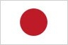
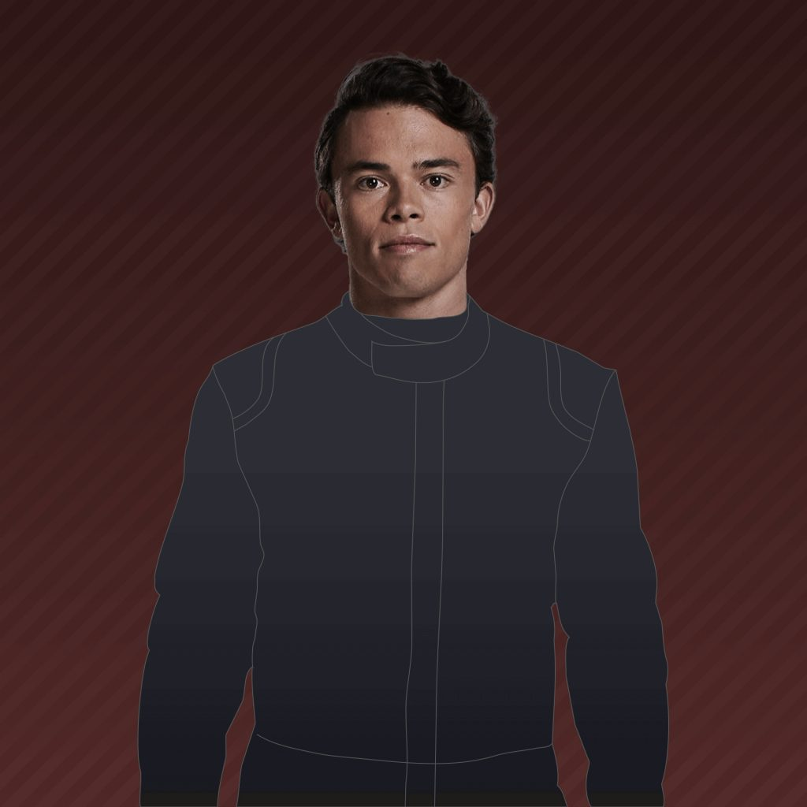

22
Yuki Tsunoda


21
Establecido en 2006 como la escuderia en donde los jóvenes pilotos del prodigioso grupo de talentos Red Bull afinan su talento en la F1 sin la presion de debutar en el equipo mayor dando libertad y tranquilidad para desarrollar futuros campeones mundiales, AlphaTauri, originalmente llamado Toro Rosso, se formó a partir de las cenizas del valiente equipo Minardi. Sebastian Vettel dio validez al enfoque casi de inmediato, logrando una victoria de cuento de hadas en 2008, antes de disfrutar del éxito en el campeonato mundial con el equipo matriz Red Bull Racing. Hoy en día, el espíritu de fomentar el talento sigue siendo válido, aunque el equipo italiano ya no es simplemente un "equipo B", sino un constructor por derecho propio...